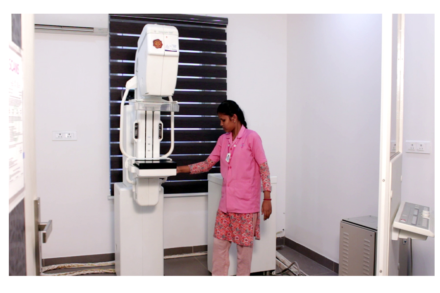

Innovative design and more powerful capabilities simplifies scanning, delivering enhanced contrast resolution, faster processing speeds and frame rate
3D/4D imaging technologies to excellent result with minimal time.
Using AI in sonoCNS reduces Keystrokes by 80% for fetal Brain Exams.
Achieve a new standard of color Doppler with Radiantflow- delivering easy,Fast Visualization of even the tiniest of vessels.
SlowflowHD and slowflow 3D help to visualize low velocity vessels in 2D and 3D obstetrical and gynecological exams.
Streamline the volume imaging by obtaining any plane from a 3D or 4D volumes by simply drawing a line, curve,poly-line or trace .Enhance image with adjustable slice thickness for improved contrast resolution.
Digital Mammography

GE-Senographe-DMR+
Produces high – resolution images that can be further enhanced
The enhanced images is its adjustable brightness and contrast, this lead to more accurate detection of signs of early cancer.
To detect small calcification,masses and other signs.